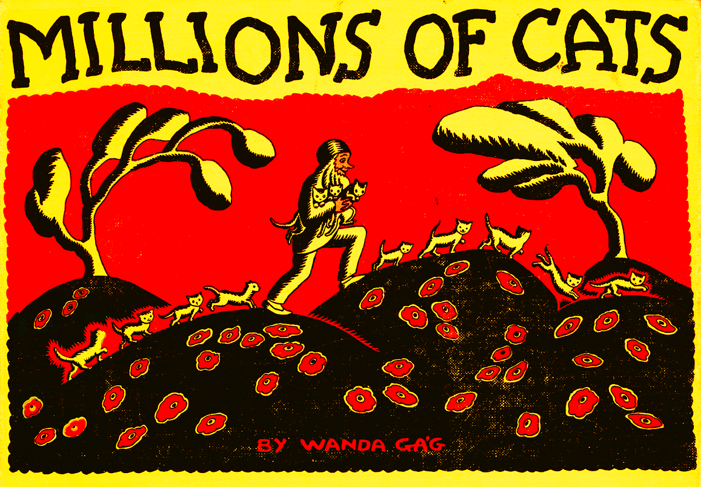
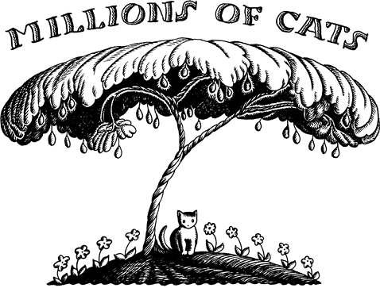
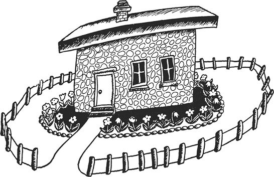
むかしむかし あるところに ずいぶんな おじいさんと ずいぶんな おばあさんが おりました。 そのすまいは、 こぎれいな おうちで、 とぐちを のぞいて ぐるりと かだんが ございます。 ところが わびしい くらしなので、 しあわせな きもちには なれなかったのでした。
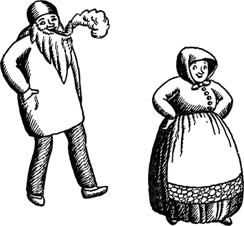
「ねこさえ いてくれりゃあねえ。」と おばあさんは ためいき。
「ねこ？」と おじいさんが たずねます。
「そう、 かわいらしい もふもふの こねこ １ぴき。」と おばあさん。
「そんなら、 ちょっくら つかまえて こようかね。」と おじいさん。
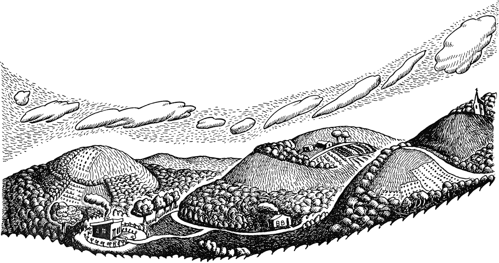
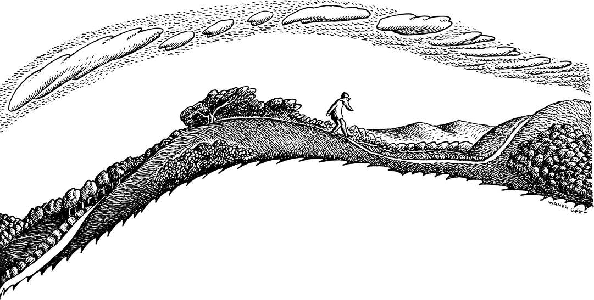
こうして でかけた おじいさん、 おかを いくつも のぼって ねこを さがしました。 ぎらぎらした おかから おかへ えいさ こらさ、 ひえびえした たにから たにへ えっちら おっちら。 えんえん ながなが あるきつづけて、 とうとう たどりついた おかには なんと いちめん ねこばかり。
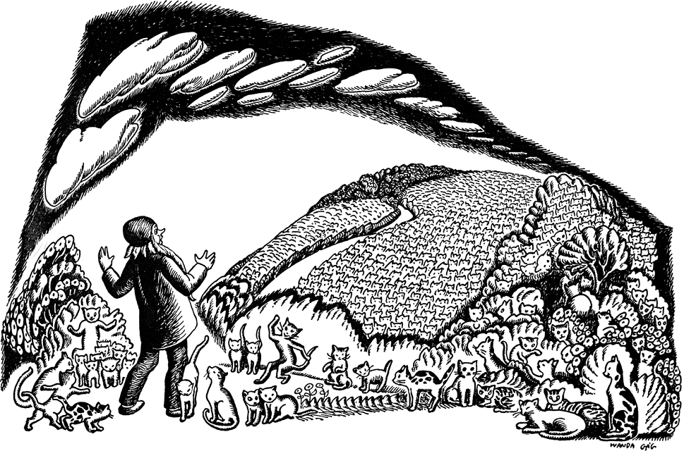
ここも ねこ、 そこにも ねこ、
ねこ こねこ いたるところ、
ぞろぞろと ねこ、
わらわらと ねこ、
ねこ ばんばんせんせん、 おくせんまん、 おくちょうまん。
ねこ こねこ いたるところ、
ぞろぞろと ねこ、
わらわらと ねこ、
ねこ ばんばんせんせん、 おくせんまん、 おくちょうまん。

「おお。」と うれしい こえを はりあげる おじいさん。「これなら いちばん めんこい ねこを えらんで、 うちに つれて かえれるなあ！」そこで １ぴき えらびました。 しろねこです。
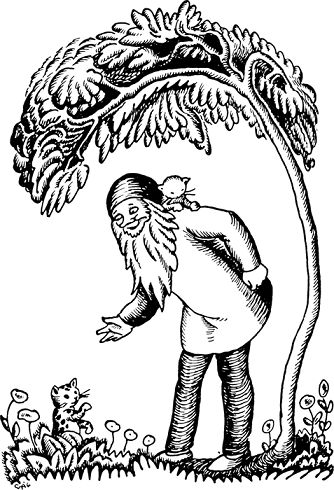
ところが かえりかけたところで、 またべつの しろくろのが めのまえに いて、 はじめのと おなじくらい かわいかったのです。 なので、 そのこも ひろいました。
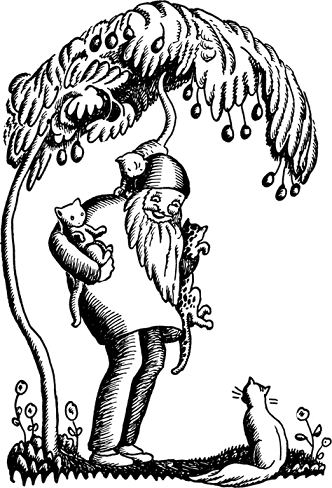
なのに そのあと めに とびこんできたのが さきに いた はいいろの ふわふわ こねこ。 どこもかしこも まえと まけないくらい かわいいものですから、 また そのこも ひろいました。
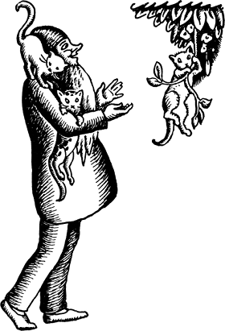
そして ふと めにはいる かえりみちの かどのところの １ぴき。 かわいすぎたので ほうっておけず、 そのこも またまた ひろいました。
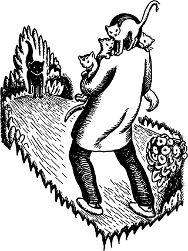
そのすぐあと むこうに おじいさんが みつけたのは たいへん うつくしい くろの こねこ。
「こいつを すておくなんて なが すたるってもんだ。」と おじいさん。 そこで やはり ひろいます。
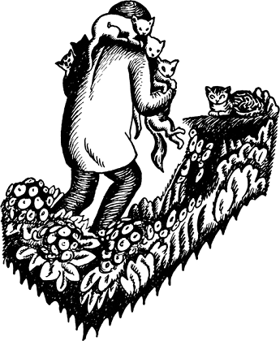
ふと そのさらにおく、 めのまえに あかちゃん とらのような ちゃいろと くろの しましま ねこ。
「まったく ひろうしか ないわい！」と こえを はりあげる おじいさん、 そのとおりに いたします。
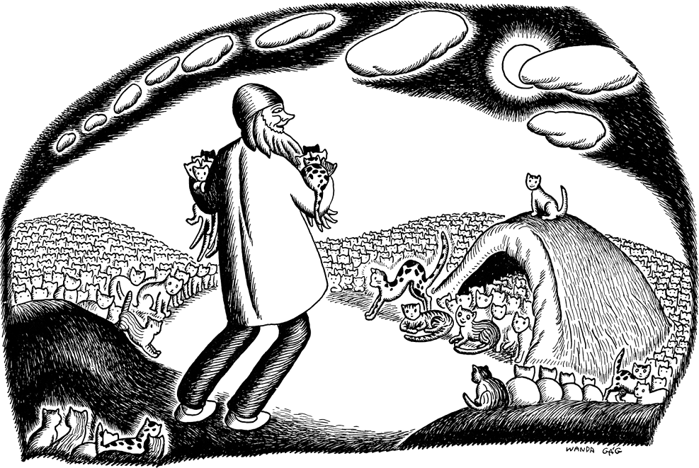
そうして なりゆきに まかせて、 おじいさんは みつけるたびに めのまえの ねこが かわいくて ほうっておけないと、 じぶんでも わからないまま ねこを みんな つれていくことに いたしました。
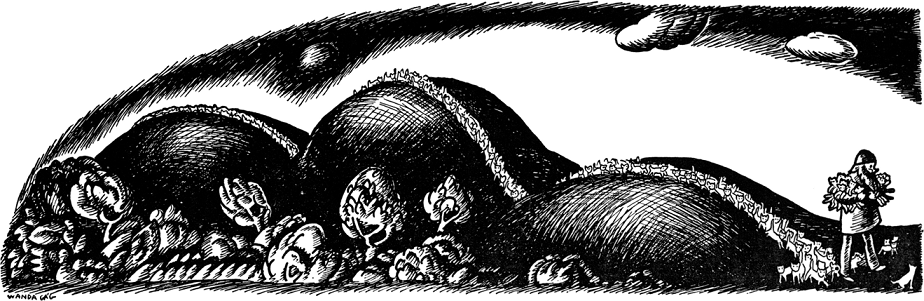
こうして ぎらぎらした おかから おかへ ひきかえし、 ひえびえした たにから たにへ ぬけていき、 おばあさんに かわいい ねこ みんなを みせに かえるのです。
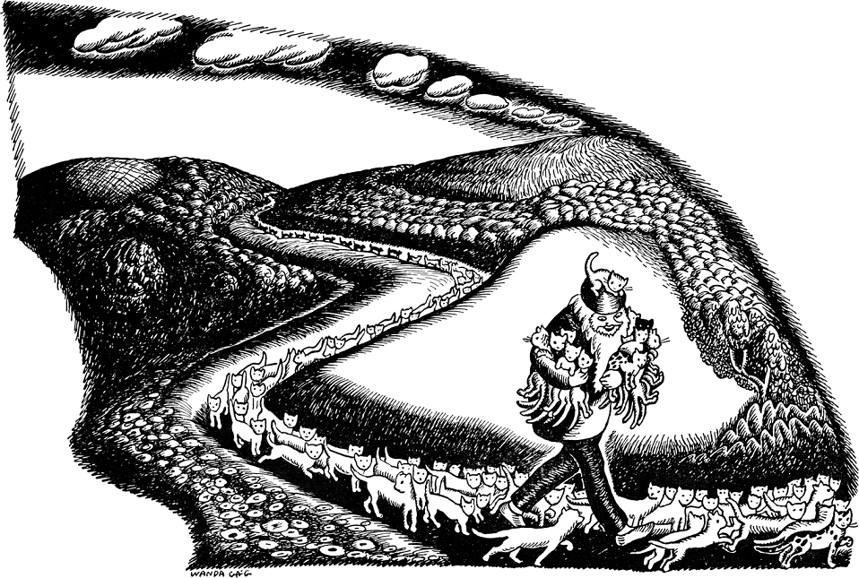
おじいさんの うしろから ぞろぞろと わらわらと、 ばんばんせんせん、 おくせんまん おくちょうまんと、 ねこが ついてくるのは ゆかいな みもので ありました。
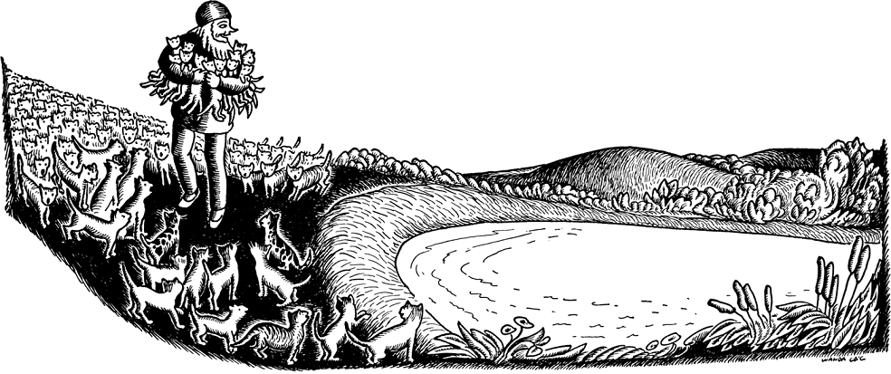
みんなして いきあたったのは いけのところ。
「みゃあ、 みゃあ！ みんな のどが かわいたよ！」と こえを あげていく ねこ、 ぞろぞろ わらわら ばんばんせんせんの ねこ、 おくせんまん おくちょうまんの ねこ。
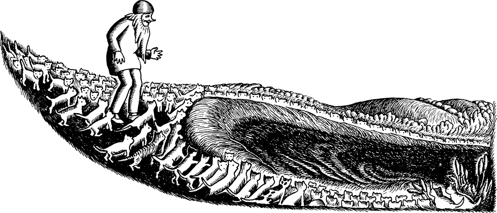
「ふむ、 ここに おおきな いけが あるぞ。」と おじいさん。
どんどん ねこが みずを ひとなめずつ していくと、 なんと いけが ひあがりました！
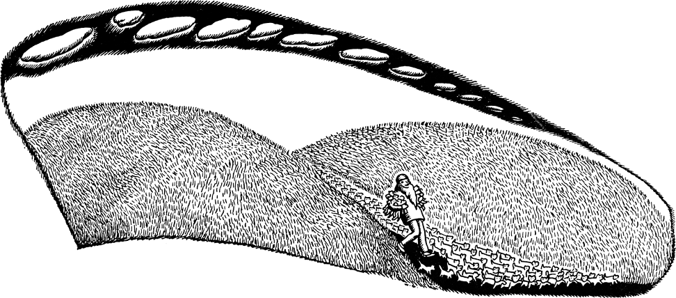
「みゃあ、 みゃあ！ みんな おなか すいたよ！」と いいだす ねこ、 ぞろぞろ わらわら ばんばんせんせんの ねこ、 おくせんまん おくちょうまんの ねこ。
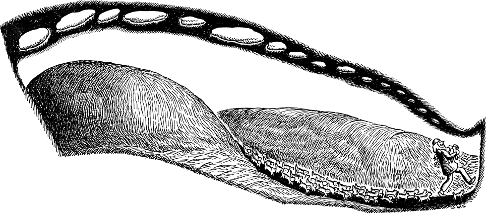
「おかには くさが ふんだんに あるぞ。」と おじいさん。
ずんずん ねこが くさを ひとくちずつ たべていくと、 なんと １ぽんも のこりません！
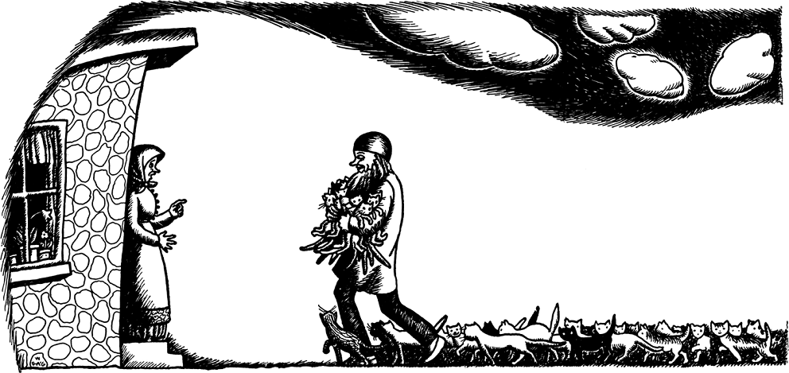
ほどなくして おばあさんの めのまえに みんなが やってきました。
「おやまあ！」と びっくり。「なにごとだい？ ねだったのは こねこ １ぴきなのに、 このありさまは？ ――
ここも ねこ、 そこにも ねこ、
ねこ こねこ いたるところ、
ぞろぞろと ねこ、
わらわらと ねこ、
ねこ ばんばんせんせん、 おくせんまん、 おくちょうまん。」
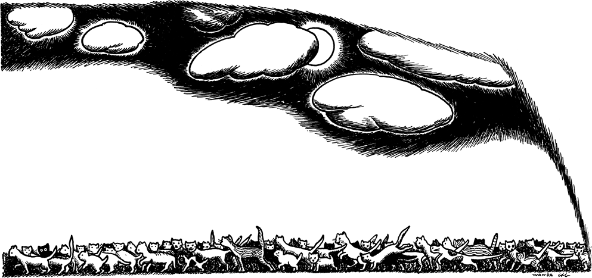ねこ こねこ いたるところ、
ぞろぞろと ねこ、
わらわらと ねこ、
ねこ ばんばんせんせん、 おくせんまん、 おくちょうまん。」
「いやいや、 これじゃあ えさが まにあわん。」と おばあさん。「こっちが くいつぶされて、 いえが かたむくよ。」
「これは うっかり。」と おじいさん。「どうしたもんか。」
おばあさんは しばらく かんがえてから こう いいました。「よし！ そんなら どのねこが のこるかは、 ねこのうちで きめてもらえば ええ。」
「そうだな。」と おじいさんは ねこ みんなに よびかけます。「いちばん めんこいのは どのねこだ？」
「はい！」
「おう！」
「いや ぼくだ！」
「わたしが いちばん！」
「うちだ！」
「いや われだ！ わしだ！ わらわだ！」と あがっていく こえ、 ぞろぞろ わらわら ばんばんせんせんの、 おくせんまん おくちょうまんの こえ。 どのねこも じぶんが いちばん かわいいと おもっていたものですから。
かくして おおげんかの はじまり。

どのねこも おたがいに ひっかき ぐっさり、 ものすごい ものおとで、 おじいさんと おばあさんは おおいそぎで うちのなかに かけこみました。 ふたりとも こういう あらそいごとは にがてなのです。 ところが しばらくすると ものおとも やんだので、 おじいさんと おばあさんが まどの そとを のぞきますと、 ことの しだいが わかりました。 めのまえには １ぴきも ねこが いなかったのです！
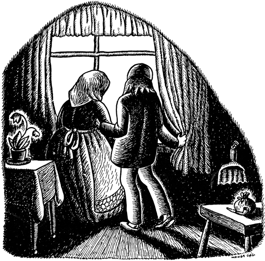
「どうやら ともぐい しちまったみたいだね。」と おばあさん。「こまったねえ！」
「でも ほれ！」と おじいさんは くさむらを ゆびさします。 そのなかで しゃがんでいたのは、 ぶるぶる ふるえた こねこ １ぴき。 そとへ でた ふたりは そのこを ひろいあげました。 がりがり ぼさぼさの ねこです。
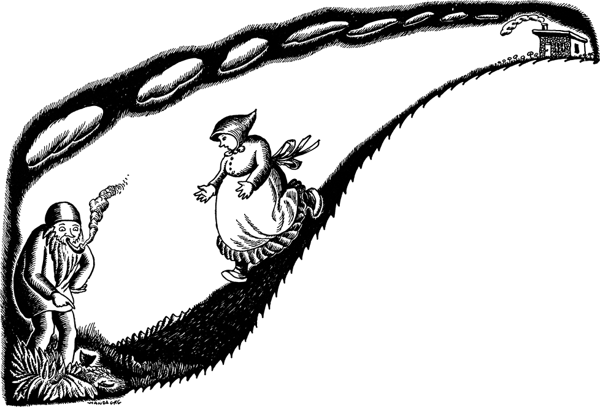
「かわいそうな こねこ。」と おばあさん。
「けなげな こねこだ。」と おじいさん。「どういうわけだか くわれずに すんだのか、 ぞろぞろ わらわら ばんばんせんせんの、 おくせんまん おくちょうまんの ねこどもに？」
「その、 わたくし とても じみな こねこですので。」と こねこ。「あなたさまが いちばん かわいいのは どいつだと よびかけましたときにも、 なんとも もうしませんで。 それで だれからも ちょっかい だされずじまいで。」
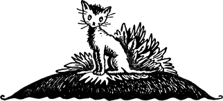
ふたりは そのこねこを いえへと つれていき、 なかで おばあさんに ぬくい おふろに いれてもらい、 けなみに くしを かけてもらうと、 こねこは ふわふわ つやつやに なりました。
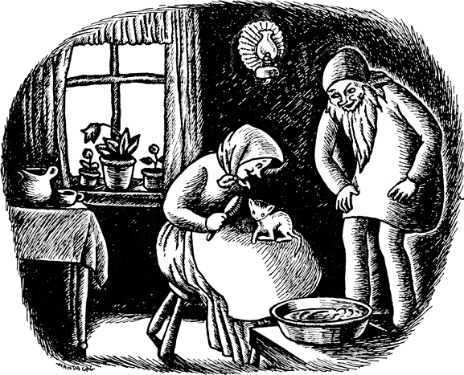
まいにち ふたりは たっぷりの ぎゅうにゅうを やり ――
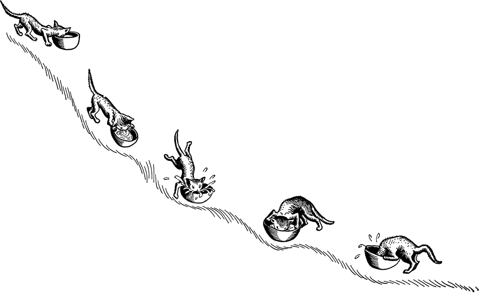
―― すぐに こねこは こぎれいで ふくよかに なりまして。
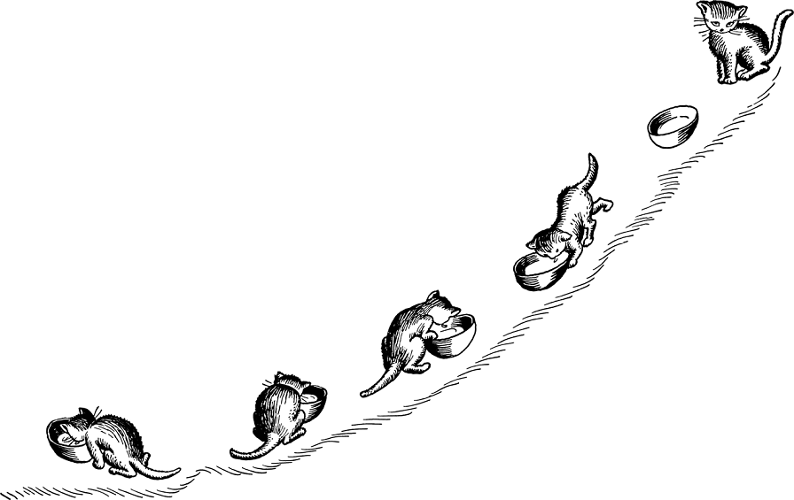
「やっぱり かわいいのは このねこだね。」と おばあさん。
「よのなかで いちばん うつくしい ねこだとも。」と おじいさん。「そりゃあ わかるとも。 なにせ わしは ――
ぞろぞろと ねこ、
わらわらと ねこ、
ばんばんせんせん おくせんまん おくちょうまんの ねこを ――
みてきたが こいつほど めんこいのは おらなんだよ。」
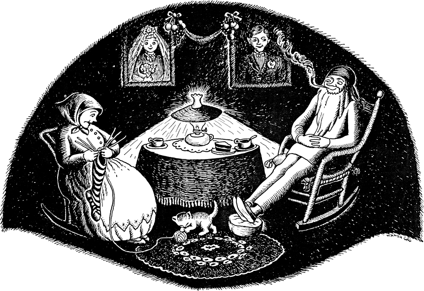
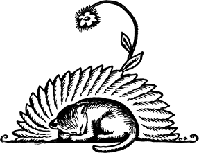
 g (1928) "Millions of Cats"
g (1928) "Millions of Cats"